- 00 开篇词 数学，编程能力的营养根基.md.html
- 01 从计数开始，程序员必知必会的数制转换法.md.html
- 02 逻辑与沟通，怎样才能讲出有逻辑的话？.md.html
- 03 用数学决策，如何规划好投入、转化和产出？.md.html
- 04 万物可数学，经典公式是如何在生活中应用的？.md.html
- 05 求极值：如何找到复杂业务的最优解？.md.html
- 06 向量及其导数：计算机如何完成对海量高维度数据计算？.md.html
- 07 线性回归：如何在离散点中寻找数据规律？.md.html
- 08 加乘法则：如何计算复杂事件发生的概率？.md.html
- 09 似然估计：如何利用 MLE 对参数进行估计？.md.html
- 10 信息熵：事件的不确定性如何计算？.md.html
- 11 灰度实验：如何设计灰度实验并计算实验的收益？.md.html
- 12 统计学方法：如何证明灰度实验效果不是偶然得到的？.md.html
- 13 复杂度：如何利用数学推导对程序进行优化？.md.html
- 14 程序的循环：如何利用数学归纳法进行程序开发？.md.html
- 15 递归：如何计算汉诺塔问题的移动步数？.md.html
- 16 二分法：如何利用指数爆炸优化程序？.md.html
- 17 动态规划：如何利用最优子结构解决问题？.md.html
- 18 AI 入门：利用 3 个公式搭建最简 AI 框架.md.html
- 19 逻辑回归：如何让计算机做出二值化决策？.md.html
- 20 决策树：如何对 NP 难复杂问题进行启发式求解？.md.html
- 21 神经网络与深度学习：计算机是如何理解图像、文本和语音的？.md.html
- 22 面试中那些坑了无数人的算法题.md.html
- 23 站在生活的十字路口，如何用数学抉择？.md.html
- 24 结束语 数学底子好，学啥都快.md.html
03 用数学决策，如何规划好投入、转化和产出？
在工作和生活中，我们经常会说“这样做，划不划算？”其实这是做每个决策时都会面临的一个问题，也就是心里得有个“小算盘”。
那么怎么我们应该怎么“算账”呢？算完账后又应该如何决策呢？
下面我会先讲一个我的算账定律，带你在麻将局中认识算账的关键三要素：系统、指标、兑换；然后再带你回到学生时代的“补习场景”，认识转化漏斗分析法，看到外部力量向指标的转化路径；最后，还是回归各位程序员的现实工作场景中，通过三个案例看到不同的转化路径，深入理解“投入”“转化”“产出”三者的关系。
本课时的内容梗概如下图所示，可供你参考学习。
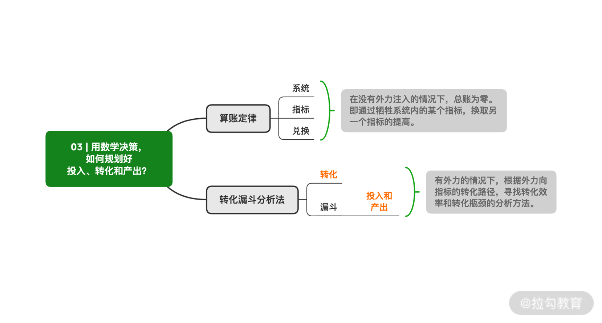
公瑾的算账定律
要算账，你需要先明确算账的对象，也就是你在算谁的账。虽然是同一件事情，但对象不一样，可能导致结果的截然不同。
假设你与好友大聪明、大漂亮、大迷糊一起打麻将，4 个小时的激烈斗争后，你们的盈亏账单如下：
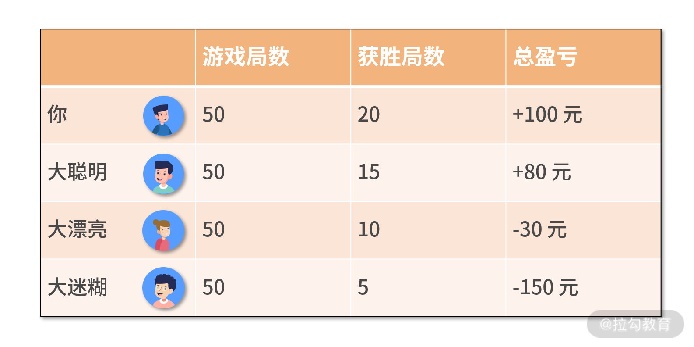
假设计算的对象是你，那么会得到总盈亏为 100 元，胜率 40%，平均每局盈利 2 元。如果计算对象是你们四个人，那么会得到总盈亏为 0 元，平均每局盈利 0 元。
你会发现，在整个“麻将局”这一大的系统下，即使每个人的盈亏不同，但整体看这个“系统”的总盈亏情况是 0，也就是不盈不亏。
所以接下来，给你介绍一个算账定律：对于一个没有外部力量作用的系统，它的总账为零。就好比，将你们 4 个人看作一个系统，打麻将只是系统内部的动作，整个系统并没有受到任何来自外部力量的作用，因此总账必然为零，这与物理学中的能量守恒定律很像。
相反，如果一个系统受到了外部力量，那么总账就可能不是零了。 就好比，把你一个人看作一个系统，再把大聪明、大漂亮和大迷糊 3 个人看作是另一个系统，然后在系统和系统间的相互作用下。最后，你的系统盈利了 100 元，而另一个 3 人合体的系统亏损了 100 元。
关键要素：系统、指标和兑换
利用算账定律时，你需要把握好以下几个关键要素，分别是系统、指标和兑换。我们以大漂亮的学习成绩为例展开讨论。
系统，就是一个个对象，它包括了你研究的目标对象，也包括了影响你研究目标的外部系统。对于大漂亮的学习而言，大漂亮就是一个系统，老师也是一个系统。
指标，是评价系统运转结果的数学变量，即总账。例如，对于大漂亮的系统而言，指标包括但不限于考试成绩、生活愉悦度、日均自习时长、日均参加补习班的时长、日均娱乐时长等。
兑换，是个动作，也是个结果，即你在用什么来换取什么。算账定律（算账版的能量守恒定律）说到，对于一个没有外部力量作用的系统，它的总账为零；反过来说，要想指标（总账）有提高，就需要借助外部力量，并把它兑换为指标的提高。
我们以大漂亮想要提升考试成绩为例，通过两种方式来看看系统情况：
- 第一种方式是去参加补习班。此时，大漂亮是一个系统，补习班老师是另一个系统。大漂亮系统，在借助补习班老师系统的外部作用，来兑换出考试成绩的提高。
- 而另一个方式是减少娱乐时长，用来增加自习时长。此时大漂亮系统没有接收外力，那么总账还是零吗？依然是。大漂亮成绩提高了，但是娱乐时间变少，导致生活愉悦度下降，这是一种系统内部的兑换。
对这个大漂亮的例子，我们可以得出以下结论：
- 在外部力量改变的时候（例如，从参加大糊涂补习班，更改为参加小天才补习班），会让系统的总账变好。即生活愉悦度不折损的基础上，提高学习成绩。
- 在外部力量不改变的时候，系统总账不变，但可以通过系统内部兑换，提高某个指标。即减少娱乐时长，增加自习时长。通过降低生活愉悦度，兑换出学习成绩的提高。对于大漂亮而言，有得有失，总账不变。
这两种方式的结论分别如下图所示：
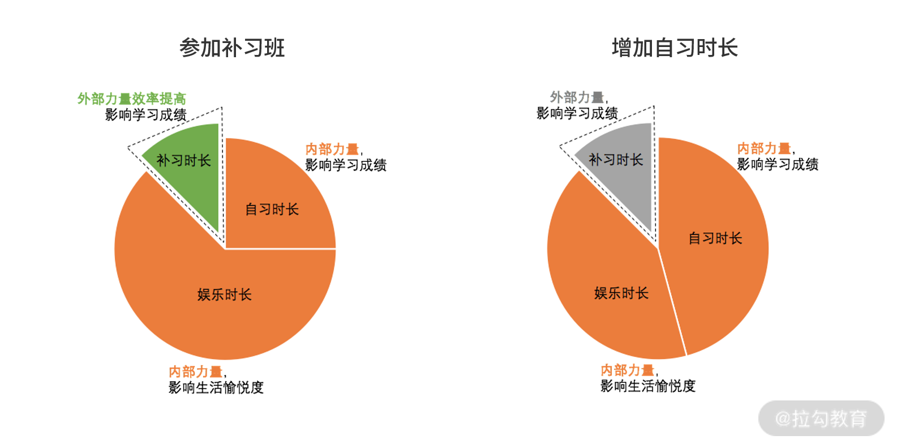
转化漏斗分析法
从上面“打麻将”和“大漂亮提升成绩”的例子，你会发现纯内部力量的调整，只是左手倒右手的兑换，而让指标变得更好的方式是，要借助外部力量。
有了外部力量之后，就要开始分析外部力量作用在系统中的效率，这就需要转化漏斗分析法。
- 转化，是一个动作，表示的是外部力量转化为指标提高的动作过程。
- 漏斗，代表了效率，即转化过程的投入和产出分别是多少。
转化漏斗分析，能够辅助你看清转化路径，并寻找瓶颈予以突破。
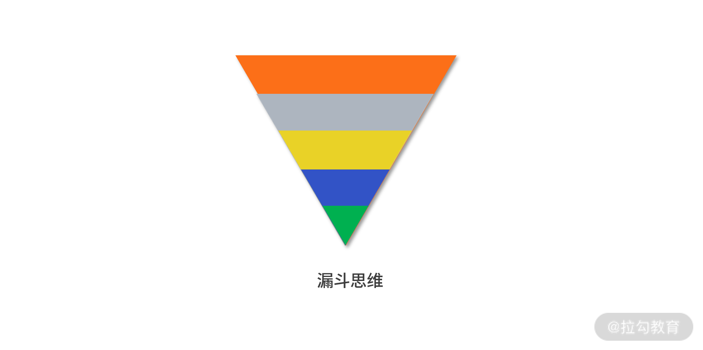
我们继续以大漂亮参加补习班为例。假设大漂亮每天参加 3 个小时的补习班学习，最终学习成绩获得了 10 分的提高。那么问题来了，这 3 小时的补习转化为 10 分的提高，转化路径是什么？转化效率如何？是否还有提高的空间呢？
带着这些问题，我们通过对大漂亮学习的无死角跟踪。我们发现，补习时长转化为分数提高的路径为：
- 投入补习的时间，可以拆分为认真听课的时间，和不认真听课（玩手机、打瞌睡）的时间。
- 认真听课的时间里，会带来掌握知识点的提高。
- 掌握的知识点，会换取考试成绩的提高。
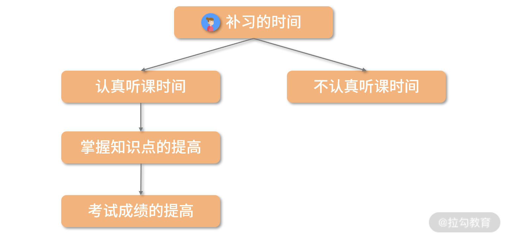
根据转化路径，我们就能计算出转化效率。下表是大漂亮的转化效率表：
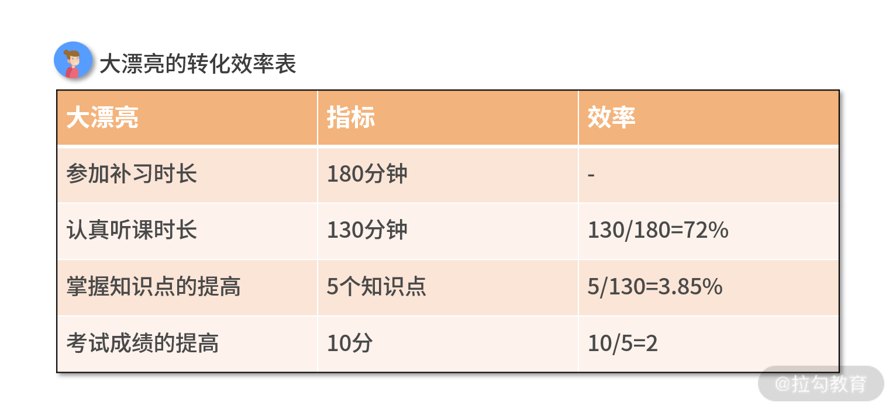
假设大聪明也采取了上补习班提升成绩的方式，我们补充下大聪明的转化效率表，和大漂亮的转化效率对比观察。
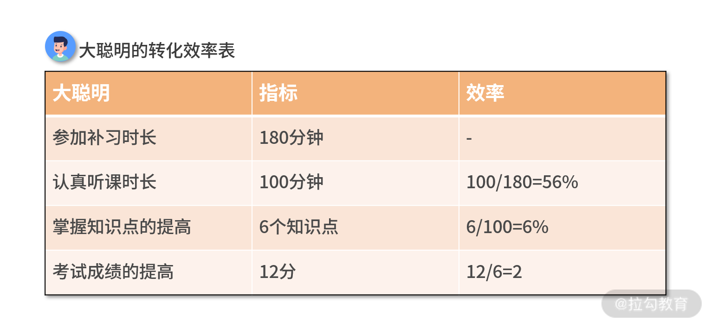
根据对比就会有如下的数据洞察：
- 72% > 56%，所以大漂亮上课更加认真听讲；
- 3.85% < 6%，大漂亮虽然认真听课，但她没有很好地理解老师所讲的知识点。显然，大漂亮的理解和学习能力需要提高；
- 考试技巧方面，大漂亮和大聪明是一样的，即掌握的知识点转化为分数的效率都是 2分/知识点。
但整体看下你会发现，最终大聪明的转化效率还是要更高的。同样的补习时长，大聪明的成绩提高更多，仅仅因为在转化漏斗的过程中，大聪明在“掌握知识点”这一步做得更好。
所以据此，我们可以给出大漂亮如下学习建议：
大漂亮需要提高自己对知识点的吸收和理解能力。对于大漂亮而言，这是提高成绩最有效的方式。假设大漂亮也能以 6% 的转化率吸收知识，那么大漂亮会得到 130×6%×2 = 15.6 分的提高，这相当于她现在 15.6÷2÷3.85%÷72% = 281 分钟的参加补习时长投入！
虽然在真正的学习生活中，没有人会像这样计算自己工作、学习的转化漏斗情况，但这种思维方式却会影响我们做事风格。每个人的学生时代，班里都会有个超努力但学习总是中游的同学，他们其实就是转化漏斗出了问题，仅想着扩大自己的底部橙色区域的精力和时长，没想着如何提升转化效率，也就是精力没用到刀刃上。
而一个做事风格高效的人，心里是有自己的转化漏斗的，尤其在复杂的工作业务中。他会用这种思维去理解许多事情的本质和原理，抓住关键要素，认清系统、指标、兑换，并规划好投入、转化、产出，将复杂过程简单化。
案例 程序员工作中的“算账”场景
讲完了算账定律和漏斗分析法，我们给出一些程序员工作中可能遇到的算账案例。
假设某头条 App 有一个推荐系统的技术团队，负责用户的 PV 指标（page view 页面点击量），它的基本思路如下图所示。长大后的大聪明、大漂亮、大迷糊均在这一团队中，我们看下他们各自的表现。
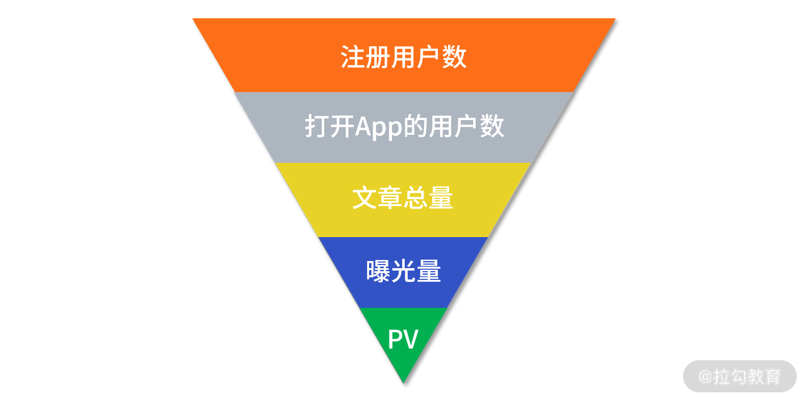
案例 1 没有外力，系统内部指标转化
假设长大后的大聪明是该团队的其中一个推荐算法工程师，他设计的推荐系统方案是：对每个用户，利用 CTR（Click-Through-Rate点击率）模型，预测用户点击文章的概率。接着，只推荐点击率大于阈值（设置为 0.8）的文章给用户，并形成首页的 feed 流。
有一天，大聪明调整了点击率阈值，由 0.8 提高到了 0.9，其余影响因素都没有变，你来帮大聪明算算账，看他这样的动作对这个推荐系统是否有帮助。
分析：先看一下我们的分析对象，也就是系统。此时，我们的系统可以是这个推荐系统。指标自然就是这个系统在用户身上产生的 PV。大聪明的动作是调整了点击率阈值，这很显然是个系统内部的改动，并没有外部力量注入这个系统。接下来我们对比分析一下两种不同阈值的转化路径。
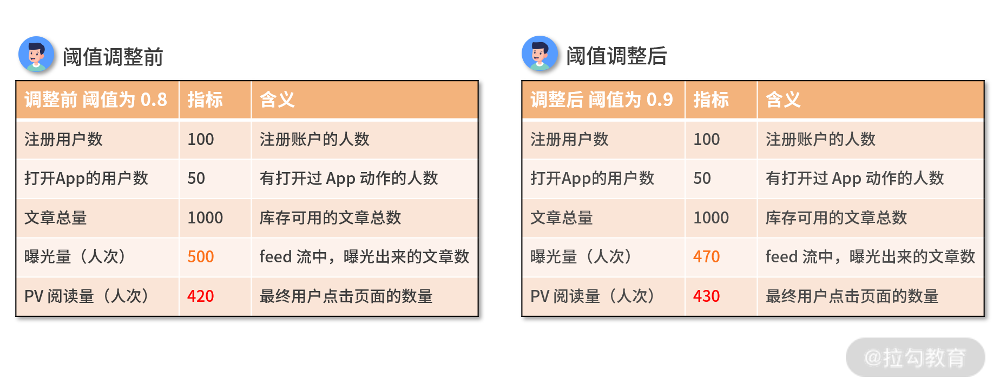
我们的 App 总共有注册用户 100 人，其中 50 人会在统计数据的观察期间内打开过 App，我们的库存文章总量为 1000 篇。
- 当设置阈值为 0.8 的时候，总共的曝光是 500 人次，最终产生的阅读量是 420 人次；
- 当阈值提高设置为 0.9 的时候，符合 CTR 阈值门槛的文章必然会减少。
因此，曝光量由 500 人次降低到 470 人次。
但运气比较好，提高了阈值之后，由于文章匹配度更高，反而带来了更多的页面点击量（430 人次）。对于这个推荐系统而言，在没有外力的情况下，通过折损了曝光量，兑换到了 PV 的提高。
这个兑换是否合理，或者说是否划算，可能要综合公司业务的现状来考量。
案例 2 借助外力，指标提升
长大后的大漂亮是其中的一个前端工程师，他从 App 前端交互上，优化了一些功能上的体验，例如 App 闪退、文章打开缓慢等问题。假设其余的影响因素都没有变化，我们再来帮大漂亮算算账吧。
分析：我们的系统、指标、转化路径都没有发生改变。但由于修复了系统 bug，已经不再是系统内部的改动了。这个推荐系统有外力注入其中，而这个外力就是大漂亮的代码。此时转化路径的指标就变成了如下图表所示。
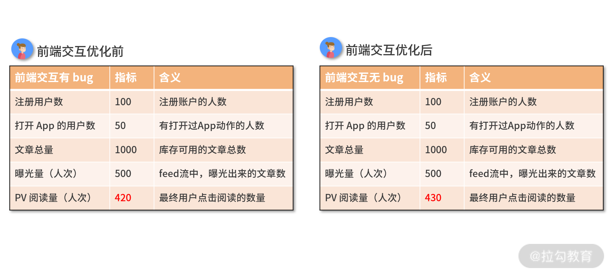
当 bug 修复之后，注册用户数、打开 App 用户数、文章的曝光量都没有改变。但是因为产品交互体验变好了，用户点击文章的 PV 由 420 提高到了 430。
对于这个推荐系统而言，在有外力的情况下，外力换来了 PV 的提高。这个功能迭代就是合理的、划算的，毫无疑问是有价值的。
案例 3 借助外力，指标提升
长大后的大迷糊是其中一个建模工程师，他从 CTR 模型上进行优化，让 CTR 模型的预估准确率大幅提高。随后，他使用模型的方法是，给用户曝光模型预估 CTR 最高的 500 篇文章。假设其他影响因素都没有变化，你再来帮大迷糊算算账吧。
分析：此时 CTR 模型的准确率被提高了，这个推荐系统就又有了外力注入。而这个外力，就是模型哥做的 CTR 新模型，此时转化路径的指标就变成了下方图表所示。
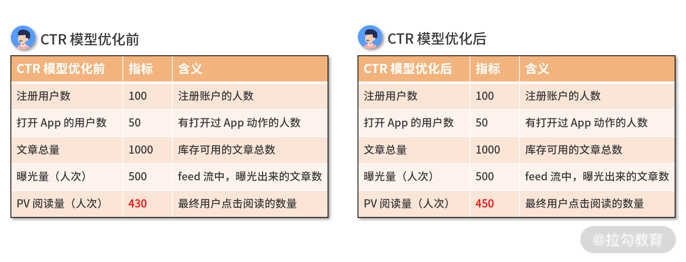
当 CTR 模型准确率提高后，注册用户数、打开 App 用户数、文章的曝光量都没有改变。但是因为模型更准了，用户曝光的文章跟用户的兴趣更匹配，PV 由 430 提高到了 450。
对于这个推荐系统而言，在有外力的情况下，外力换来了 PV 的提高。这个功能迭代就是合理的、划算的，毫无疑问是有价值的。可见大迷糊，不仅不迷糊，反而很有业务能力。
还是那句话，转化漏斗分析法的应用是非常灵活的，以上三个案例仅仅是想向你展示这个思维在工作中的应用，工作中具体如何实践“转化漏斗分析法”，还是得看你的理解和思考。
小结
这一课时，我们重点讲述了两方面的内容，一是算账定律，另一个是转化漏斗分析。算账定律告诉我们，在没有外力注入的情况下，总账为零。即通过牺牲系统内的某个指标，换取另一个指标的提高。转化漏斗分析是在有外力的情况下，根据外力向指标的转化路径，寻找转化效率和转化瓶颈的分析方法。
这两方面的思维，非常利于我们看到生活中很多事情的本质。
例如，大迷糊想赚更多钱。一种方法是增加工作时间，利用休息时间自己“琢磨”技能，相当于大漂亮的“通过自习提升成绩”，这就是在没有外力的情况下系统内部的动作。
另一种方法是，大迷糊学习拉勾教育的课程，在专业大佬的指引下，找到能力提升通道，提升自己的溢价空间，这就是一个注入大迷糊系统的外部力量。利用这个力量，大迷糊在同样的时间内，换来了更多的收入回报。很明显，通过外部力量换来的指标提高，才是可持续的、良性的指标增长方式。
当然，无论是哪种方式，只要是在不断地提升自我、挑战自我，都是可取并让人敬佩的。 只不过“方法比过程更重要”，这一课时的主题是“如何规划好投入、转化和产出”，希望你也能将这一思维应用到生活中，找到达到目标的最优方法。
你在工作、生活中有哪些运用到转化漏斗分析法的例子？或者你对此有什么感悟和想法？欢迎在下方留言区与大家分享。